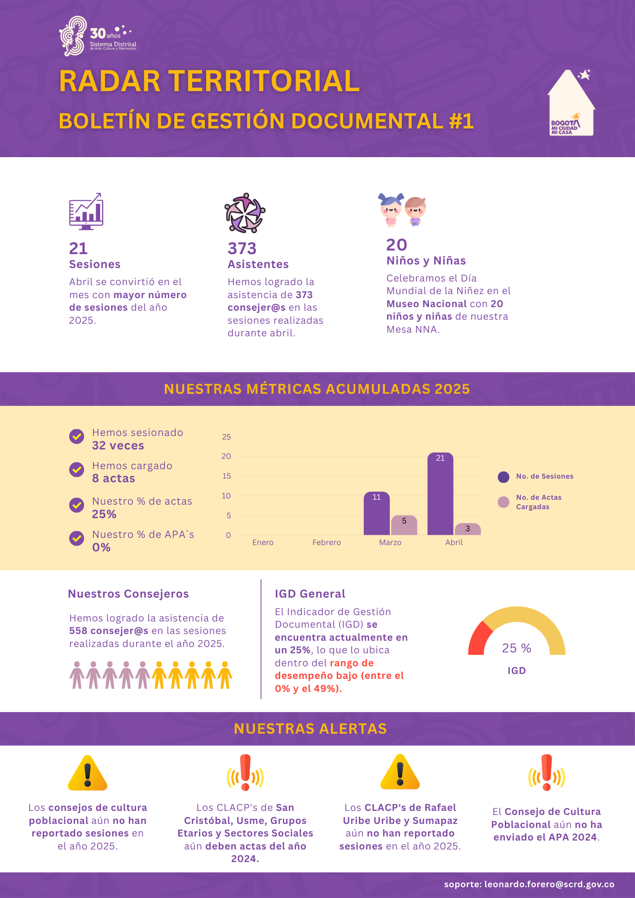

Dirección de Asuntos Locales y Participación (DALP)
La Dirección de Asuntos Locales y Participación (DALP) promueve el fortalecimiento de los espacios ciudadanos, impulsa el Sistema Distrital de Arte, Cultura y Patrimonio (SDACP), y articula la gestión territorial en Bogotá desde la Secretaría de Cultura, Recreación y Deporte (SCRD).
Boletines
